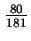
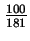
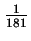
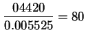
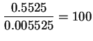
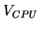
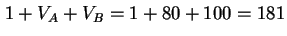

จะเห็นได้ว่าหลังจากที่งานเสร็จการรับบริการจากตัวประมวลผลกลาง, ความน่าจะเป็นที่งานจะออกไปยังดิสก์ A, ดิสก์ B หรือเทอร์มินอล เท่ากับ , , และ  ตามลำดับ ดังนั้นค่าความน่าจะเป็นในการเปลี่ยนแปลงเท่ากับ 0.4420, 0.5525, และ 0.005525
จากค่าความน่าจะเป็นการเปลี่ยนแปลง เราสามารถหากลับค่าอัตราการแวะเวียนได้ดังนี้
|  | (7.39) | ||
|  | (7.40) | ||
|  |  | (7.41) |